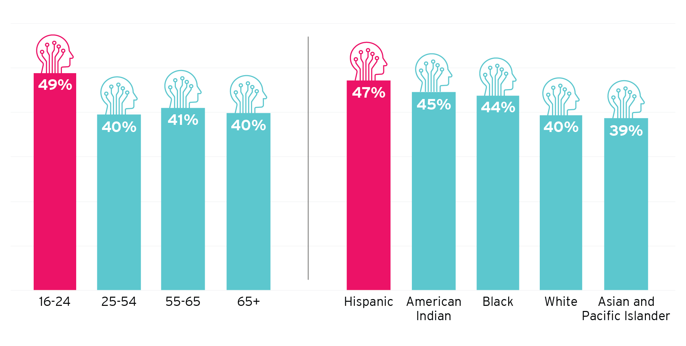

DRAFT: PLEASE DO NOT CITE OR DISTRIBUTE
At first, technologists issued dystopian alarms about the power of automation and artificial intelligence (AI) to destroy jobs. Then came a correction, with a wave of reassurances. Now, the discourse appears to be arriving at a more complicated understanding, suggesting that automation will bring neither apocalypse nor utopia, but instead both benefits and stress alike. Such is the ambiguous and sometimes disembodied nature of the “future of work” discussion.
Hence the analysis presented here. Intended to bring often-inscrutable trends down to earth, the following report develops both backward and forward-looking analyses of the impacts of automation over the years 1980 to 2016 and 2016 to 2030 to assess past and upcoming trends as they affect both people and communities in the United States.
The report focuses on areas of potential occupational change rather than net employment losses or gains. Special attention is applied to digging beneath national top-line statistics to explore industry, geographical, and demographic variations. Finally, the report concludes by suggesting a comprehensive response framework for national and state-local policymakers.
Automation exists to substitute work undertaken by humans with work done by machines, with the aim of increasing the quality and quantity of output at a reduced cost.
How do humans and automation interact?
The concept of automation, and the use of task-based models to analyze it, leads to some general rules that seem to govern the interaction of machines and workers. Here are six basic tendencies in the workings of automation and its interplay with human labor that help in assessment:
Automation substitutes for labor
If a machine can do a task currently done by humans, it will do it with greater precision, speed, and at a lower cost—but there are limitations to such substitution
Machines substitute for tasks, not jobs
A job is a collection of tasks, and even under the most aggressive scenarios, it is unlikely that machines will substitute for all tasks in any one occupation
Automation also complements labor
Workplace activity that isn’t taken over by automation is complemented by it—making the remaining human tasks more valuable
Automation can increase demand, creating jobs
Automation-driven cost and quality improvements can increase demand to a degree that offsets any would-be job losses
Capital and labor augmentation spurs innovation
When machines handle routine, time-consuming activities, human capacity is freed-up to create new products and new tasks
Tech possibility is not the same as tech reality
There are many reasons why technological adoption falls short of potential, so it is a mistake to equate technological potential with likely projected outcomes
In terms of determining the net impact of automation on employment and wages, MIT economist David Autor provides a simplified framework. In it, he highlights three primary dynamics:
What technology doesn’t replace, it complements
Workers who supply tasks that are substituted by machines are more likely to benefit from automation than are workers who supply tasks that machines can complete
Wages will be determined by the ease with which roles in demand can be filled
Wage gains for the remaining tasks completed by humans will be larger when the barriers to entry (e.g. education, training, certification) are higher
The number of jobs in an industry will be determined by the complex interaction of automation-driven price, quality, and wealth changes
Automation drives cost and quality improvements for products, as well as productivity and wealth increases for workers, which can mitigate some labor displacement
The report’s predictions assess the susceptibility of different jobs, places, and demographic groups to disruption by workplace automation and AI. Data produced by McKinsey Global Institute are employed to estimate the percentage of tasks in a given occupation that are potentially automatable given currently available technologies.
“Routine,” predictable physical and cognitive tasks will be the most vulnerable
Almost no occupation will be unaffected by technological change in the AI era. Some of the most vulnerable jobs are those in office administration, production, transportation, and food preparation. Such jobs are deemed to face “high risk” with over 70 percent of their tasks potentially automatable. All of these either involve routine, physical labor or information collection and processing activities.
“High risk” jobs represent only one-quarter of all jobs, however. The remaining, more secure jobs include a broader array of occupations ranging from professional and technical roles with high educational requirements to low-paying personal care and domestic service work characterized by non-routine or abstract activities and social and emotional intelligence.
...
Geography
Automation will take place everywhere, but its inroads will be felt differently across places, varying with local industry, task, and skill mix. Overall, smaller, more rural communities seem significantly more exposed to the automation of current-task content than larger ones. This relationship holds when comparing metropolitan to rural areas as well as among metros of different sizes. Among the country’s 100 largest metros, workers’ education attainment will prove to be decisive.
...
Demography
The sharp segmentation of the labor market by educational attainment, gender, age, and racial-ethnic identity ensures that some demographic groups are likely to bear more of the burden of adjusting to the AI era than will others. The probable divides are clear: Men, youth, and less educated workers, along with underrepresented groups all appear likely to face significantly more acute challenges from automation in the coming years. Young workers and Hispanics will be especially exposed.
Share of jobs susceptible to automation by age and race/ethnicity, 2016
Five major agendas require attention to mitigate coming stresses as the nation moves into the AI period of automation.
The next phase of the automation era may not be as dystopian as the most dire voices claim, but plenty of people and places will be affected. Therefore, federal, state, local, and civic leaders need to initiate sustained efforts to ensure the labor market works tolerably for people in the AI era of automation.
Five major agendas require attention to mitigate coming stresses:
Embrace growth and technology
Run a full-employment economy, both nationally and regionally
Embrace transformative technology to power growth
Promote a constant learning mindset
Invest in reskilling incumbent workers
Expand accelerated learning and certifications
Make skill development more financially accessible
Align and expand traditional education
Foster uniquely human qualities
Facilitate smoother adjustment
Create a Universal Adjustment Benefit to support all displaced workers
Maximize hiring through a subsidized employment program
Reduce hardships for workers who are struggling
Reform and expand income supports for workers in low-paying jobs
Reduce financial volatility for workers in low-wage jobs
Mitigate harsh local impacts
Future-proof vulnerable regional economies
Expand support for community adjustment